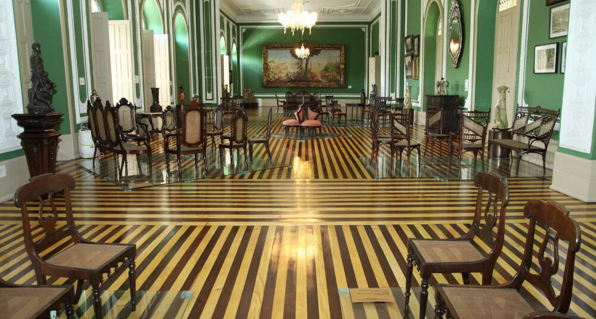

Belém
Belém, a capital do estado do Pará, é um dos destinos mais ricos e fascinantes do Brasil, sendo considerada a porta de entrada para a Amazônia. Localizada na região Norte do país, a cidade tem uma importância histórica e cultural única, sendo uma das mais antigas do Brasil, fundada em 1616. Sua localização estratégica à beira da baía do Guajará e sua proximidade com o Rio Amazonas fazem de Belém um ponto de convergência para o turismo ecológico, histórico e gastronômico.
A cidade é um centro pulsante de cultura, com uma mistura de influências indígenas, africanas, portuguesas e de outras etnias que compõem seu povo. Belém é famosa por sua gastronomia única, que destaca ingredientes regionais, como o açaí, o tacacá, o peixe frito e o bacuri, entre outros. Além disso, a cidade é um excelente destino para quem deseja explorar a Amazônia, com seus rios, florestas e fauna abundante.
Belém é também um centro de arte e cultura, com uma cena musical vibrante, especialmente no que se refere à música popular brasileira e ao carimbó, ritmo tradicional da região. O Círio de Nazaré, uma das maiores festas religiosas do Brasil, atrai milhões de turistas todos os anos, consolidando a cidade como um importante polo de turismo religioso.
Principais pontos turísticos
- Ver-o-Peso
- Estádio do Mangueirão
- Basílica de Nazaré
- Ilha do Combu
- Forte do Castelo
- Praia de Mosqueiro
O Ver-o-Peso é um dos mercados mais emblemáticos de Belém e um dos principais pontos turísticos da cidade. Localizado à beira da baía do Guajará, o mercado é o lugar perfeito para experimentar a culinária local, com uma grande variedade de peixes frescos, frutas exóticas, ervas, temperos e especiarias da região. Além disso, é um ponto de encontro de artesãos e vendedores que oferecem produtos típicos da cultura paraense.
O ambiente do Ver-o-Peso é vibrante e cheio de cores, aromas e sons da cultura local, sendo um dos lugares mais autênticos para vivenciar o dia a dia de Belém.
Para os amantes do esporte, o Estádio do Mangueirão é um local de destaque, principalmente para quem quer vivenciar a paixão dos paraenses pelo futebol. O estádio é um dos maiores da região Norte e recebe jogos de futebol, além de outros eventos culturais e esportivos.
A Basílica de Nazaré é um dos principais pontos religiosos e turísticos da cidade. A igreja é o centro da celebração do Círio de Nazaré, uma das maiores festas religiosas do Brasil. Localizada no bairro de Nazaré, a basílica atrai fiéis e turistas de todo o mundo, especialmente durante o mês de outubro, quando ocorre o famoso Círio. A arquitetura imponente da igreja e sua importância cultural e histórica tornam-na uma das atrações mais visitadas da cidade.
A Ilha do Combu, localizada a poucos minutos de barco do centro de Belém, é um refúgio de tranquilidade e beleza natural. A ilha é ideal para quem deseja relaxar em meio à natureza amazônica, desfrutando de passeios de barco, trilhas na selva e banhos de rio. Além disso, a ilha é famosa por seus restaurantes flutuantes, onde é possível saborear pratos típicos da culinária paraense, como o peixe no tucupi e a maniçoba.
O Forte do Castelo é um dos mais antigos patrimônios históricos de Belém, construído no século XVII pelos colonizadores portugueses para proteger a cidade contra ataques. O forte está localizado em um ponto elevado, oferecendo uma vista panorâmica da cidade e da baía do Guajará. Hoje, o local abriga um museu e é um ótimo ponto turístico para quem quer conhecer mais sobre a história da cidade.

A Praia de Mosqueiro é um dos destinos mais populares entre os moradores de Belém para um passeio de final de semana. Localizada a cerca de 70 km da cidade, a praia tem águas claras e é muito procurada para banhos de rio, esportes náuticos e passeios de barco. Mosqueiro tem uma infraestrutura de bares, restaurantes e hotéis, tornando-a uma excelente opção para quem deseja escapar da agitação urbana e desfrutar de momentos de lazer.
Principais pontos gastronômicos
- Restaurante Remanso do Bosque
- Localização: Periferia de Belém.
- Casa do Saulo
- Localização: Cidade Velha.
- Roxy Bar
- Localização: Umarizal.
- Soprano Restô
- Localização: Campina.
O Restaurante Remanso do Bosque é um dos melhores locais para degustar a culinária amazônica em Belém. Conhecido por seu cardápio refinado e pela apresentação impecável dos pratos, o restaurante oferece opções como o peixe do rio, pato no tucupi, e o surubim. O Remanso do Bosque é altamente recomendado por quem deseja saborear a gastronomia local em um ambiente elegante e tranquilo.
Desde sua abertura em 2011, o restaurante vem recebendo prêmios e mais prêmios além de destaque na mídia. O restaurante está literalmente na boca do povo e, ao mesmo tempo, dos famintos pela gastronomia genuinamente brasileira e criativa. O ambiente é bem decorado, porém descontraído.
O restaurante Casa do Saulo fica bem próximo ao Museu Casa das Onze Janelas, e tem vista para a Baía do Guajará. A melhor hora para visitar é ao pôr do sol, quando o ambiente fica muito mais romântico. É comum ter música ao vivo, em dias de semana. Dentre os pratos, você pode escolher o mix tapajônico, ventrecha de pirarucu e piracuí. As mesas externas são ideais para um jantar mais intimista.
É comum que a Casa do Saulo fique lotado ao final do dia. Afinal, fica de frente para um rio, uma das vistas mais incríveis de Belém.
Embora tenha nome de bar, o Roxy é um restaurante completo, excelente para marcar um jantar. Os pratos têm como inspiração os filmes clássicos do cinema, e o local tem decoração rústica e diferenciada. Boa comida, bom ambiente e serviço de qualidade.
A Estação das Docas é o melhor local para comer em Belém, pois oferece uma infraestrutura completa de entretenimento e restaurantes. Um dos lugares mais recomendados é o Soprano Restô, com sua culinária contemporânea. Também possui uma vista incrível para a Baía do Guajará e os pratos incluem risotos, peixes e carnes, com um tempero que só o paraense conhece.
Principais pontos culturais
- Theatro da Paz
- Localização: Campina.
- Museu de Arte de Belém (MABE) 
- Localização: Cidade Velha.
- Círio de Nazaré
- Localização: Diversos pontos da cidade.
- Palácio Lauro Sodré
- Localização: Cidade Velha.
- Espaço Cultural São José Liberto
- Localização: Jurunas.
- Museu Paraense Emílio Goeldi
- Localização: São Braz.
O Theatro da Paz é um dos principais ícones culturais de Belém. Inaugurado em 1878, o teatro é um dos mais importantes do Brasil e tem uma programação variada que inclui óperas, concertos, balé e teatro. Sua arquitetura neoclássica e o ambiente imponente tornam-no um ponto de referência para os amantes das artes.
O Museu de Arte de Belém possui um vasto acervo de arte brasileira e regional, com obras que datam do século XIX até os dias atuais. O museu abriga exposições temporárias e permanentes de arte contemporânea e de artistas locais, sendo um espaço importante para a preservação e divulgação da cultura paraense.

O Círio de Nazaré é a maior festa religiosa de Belém e uma das maiores do Brasil. Celebrado anualmente no mês de outubro, o Círio reúne milhões de fiéis em uma manifestação de fé e devoção à imagem de Nossa Senhora de Nazaré. Durante o evento, a cidade se transforma com procissões, celebrações religiosas, shows e eventos culturais, atraindo turistas de todo o Brasil e do mundo.
O Palácio Lauro Sodré é a sede do governo do estado do Pará e um importante ponto cultural e histórico de Belém. O palácio, que data do século XIX, apresenta uma arquitetura neoclássica e abriga diversos eventos culturais e governamentais, além de ser uma das visitas obrigatórias para quem deseja conhecer mais sobre a história política e administrativa da cidade.
O Espaço Cultural São José Liberto é um antigo convento que foi transformado em centro cultural e abriga o Museu do Círio, onde os turistas podem conhecer a história da festa religiosa mais importante da cidade. O espaço também conta com ateliês de artesanato, apresentações musicais e de dança, e é um excelente lugar para quem deseja conhecer as tradições culturais e artísticas de Belém.
O Museu Paraense Emílio Goeldi é um importante centro de pesquisa e preservação da fauna e flora amazônicas. Localizado em Belém, o museu possui um vasto acervo de itens relacionados à história natural da Amazônia, além de exibições sobre as culturas indígenas da região. O museu também possui um zoológico e jardins botânicos, sendo uma excelente opção para quem deseja aprender mais sobre a biodiversidade amazônica.